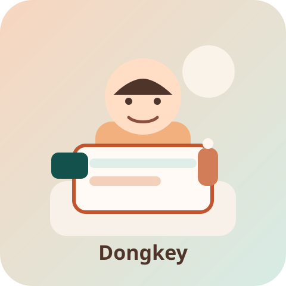

인터스텔라
답을 당장 얻지 못하더라도 끝까지 질문을 포기하지 않는 사람들의 태도 때문에 자주 다시 찾게 되는 영화입니다. 거대한 우주를 다루면서도 결국은 한 사람의 선택과 약속으로 돌아오는 방식이 오래 남았습니다.

Backend Learner · Today I Learn
배운 걸 그냥 넘기면 금방 잊어버려서, 이것저것 적어두는 중입니다.
안녕하세요. 동키입니다. 공부한 걸 그냥 지나치면 금방 흐릿해지는 느낌이 들어서, 요즘은 짧게라도 기록을 남기려고 하고 있습니다.
테스트 코드, 리팩터링, 그리고 HTML/CSS/JavaScript 같은 기본기를 하나씩 익히는 중이고, 이 페이지도 배운 걸 직접 써보면서 정리해보려고 만들었습니다. 조금 느리더라도 이해한 내용을 제 말로 남겨두는 쪽을 더 좋아합니다. 더 많은 기록은 GitHub 에 남기고 있고, 최근에는 우아한테크코스 미션을 수행하면서 기능 요구사항을 코드와 테스트로 옮기는 연습을 계속하고 있습니다.
| 이름 | 이동훈 |
|---|---|
| 닉네임 | 동키 |
| MBTI | INTJ |
| 취미 | 러닝, 사진 정리, 길게 산책하며 생각 정리하기 |
| 좋아하는 음식 | 국밥, 초밥, 토마토 파스타 |
| 관심사 | 테스트 코드, 리팩터링, 기록 중심 학습 |
요즘 자주 떠오르는 장면들


답을 당장 얻지 못하더라도 끝까지 질문을 포기하지 않는 사람들의 태도 때문에 자주 다시 찾게 되는 영화입니다. 거대한 우주를 다루면서도 결국은 한 사람의 선택과 약속으로 돌아오는 방식이 오래 남았습니다.
몰입과 집요함이 어디까지 사람을 밀어 올릴 수 있는지 보여줘서 강하게 기억에 남는 작품입니다. 때로는 지나치게 거칠고 불편한 장면도 있지만, 그래서 더 성장의 대가와 태도를 오래 생각하게 만들었습니다.
그날 배운 걸 짧게라도 적어두려고 만든 공간입니다.
header, nav, main, section, article, footer를 역할 기준으로 구분해서 쓰면 문서 구조가 훨씬 읽기 쉬워진다는 점을 다시 느꼈다.
정사각형 이미지가 일정하게 반복되는 갤러리는 Flex보다 Grid가 더 예측 가능했고, gap과 aspect-ratio만으로도 꽤 안정적인 배치를 만들 수 있었다.